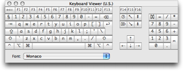

The intended purpose of the documentation is to explain the main features of TextMate and to highlight features that may not be obvious to first time users. The documentation is not exhaustive.
You should have a good understanding of what a text editor is, in particular you should have some experience with Cocoa's text edit control (used in TextEdit, Mail and Xcode). While TextMate does not use that control, it does mimic its behavior for the most part.
If you want to print this documentation then here is a printable version.
From UNIX we get that Tasks and Trends Change. In concrete terms this means that instead of writing a command (in UNIX) to solve the problem at hand, we find the underlying pattern, write a command to solve problems of that type and then use that command in a script.
This gives us a command which we can re-use in the future for multiple problems of the same type. Since it is generally much easier (and more flexible) to piece together a script of different commands than it is to write a specific command the increase in productivity can be very large. This is especially true since we do not actually write the command in the first place, we use an existing command that has already been written for this type of problem.
There are two ways in which TextMate leverages that philosophy. First it has good shell integration, so if you are skilled in using the UNIX shell, you should love TextMate.
But more ambitiously, TextMate tries to find the underlying patterns behind automating the tedious, being smart about what to do and then to provide you with the functionality so that you can combine it for your particular needs.
Granted, TextMate is not the first text editor which tries to be broad, but from Apple we get the venerable Keep It Simple. So even users with little or no experience with scripting and regular expressions are able to customize TextMate in ways that no other editor would have allowed them to.
Having said that, the philosophy of TextMate is also to Educate the User. So to fully capitalize on what TextMate gives you, you should learn about regular expressions, you should understand TextMate's scope, snippet system (also language grammars to some degree) and have an idea about the shell infrastructure provided (in particular environment variables, pipes and stdin/stdout).
For the most part TextMate and this documentation abides by Apples terminology. Below is a table of terms that might be a source of misunderstanding.
| Term | Explanation |
|---|---|
Caret |
The text insertion point. |
Cursor |
Mouse pointer. |
Document |
This refers to a file when it is loaded into TextMate (for the purpose of being edited). Old-timers often refer to this as the buffer. |
Directory |
This is sometimes used instead of folder. Folder is mainly used when talking about the GUI and directory is used when talking about shell related things. |
Generally TextMate and this documentation use the glyph representation of a key. Below is a table with most glyphs, the name of the key (as used in this documentation) and a short explanation.

If you are unsure about the location of a key, you can bring up the Keyboard Viewer, which you can add to the Input menu in the International pane of System Preferences.
| Glyph | Key Name | Explanation |
|---|---|---|
⌃ |
Control |
This key is generally in the lower left corner of the keyboard (and symmetrically placed on the right side). In addition to key equivalents, this key is also used with a mouse click to bring up context sensitive menus. |
⌥ |
Option |
This is next to the control key and often bears the label Alt. You can hold down the option key while dragging with the mouse to select text rectangularly. It is also possible to place the caret beyond the end of a line by single-clicking the mouse while holding the down option key (⌥). Together with Shift, the option key does a (rectangular) selection to where you click. |
⌘ |
Command |
The command key is also referred to as the Apple key since it has an apple symbol on it (). |
⇧ |
Shift |
The Shift key should be well-known. When used together with a mouse click, it extends the selection. |
⎋ |
Escape |
The escape key is generally in the upper left corner of the keyboard. This key can be used to dismiss (cancel) panels, which means dialogs and some (but not all) windows. In TextMate it is also used to cycle through completion candidates. |
⌅ |
Enter |
The enter key is on the numeric keypad (and is not the same as return). On laptops it is fn-return. |
↩ |
Return |
The return key should be well known. |
⌦ |
Forward Delete |
This is often just called delete and on the keyboard has a label of Del or Delete. |
⌫ |
Backward Delete |
Often called backspace. On most keyboards this has a left pointing arrow on the key (←). |
﹖⃝ |
Help |
The Help key is located above Forward Delete, but not all keyboards have it. Generally it has the word Help on the key, but it is also known as the Ins key. |
↖ |
Home |
The Home key scrolls to the beginning of the document, but does not move the caret. |
↘ |
End |
The End key scrolls to the end of the document, but does not move the caret. |
⇞ |
Page Up |
Scrolls up a page without moving the caret. Using the option key will cause the caret to be moved. When used with Shift it will create a selection. |
⇟ |
Page Down |
Scrolls down a page without moving the caret. Using the option key will cause the caret to be moved. When used with Shift it will create a selection. |
⇥ |
Tab |
The Tab key is used to insert a tab character (or equivalent amount of spaces if soft tabs are enabled). In normal controls it advances the focus to the next control. |
⇤ |
Back-tab |
The Back-tab key can be used by holding down Shift while pressing the normal Tab key. |
TextMate is a work-in-progress. One current key limitation (for non-Western users) is support for international input modes (e.g. CJK), proportional fonts, right-to-left text rendering and other (UniCode) features. As the author, I do understand the desire from users to have TextMate support these things, but currently proper support for this is a long-term to-do item.
And on the topic of limitations, I am also aware of the desire for (s)ftp integration, code hinting, split views, better printing, indented soft wrap, coffee making and literally hundreds of other user requests. You will be able to find my comments on most feature requests by searching the mailing list archive, but I do not give estimates or timeframes, other than what version number I plan for something to appear in.